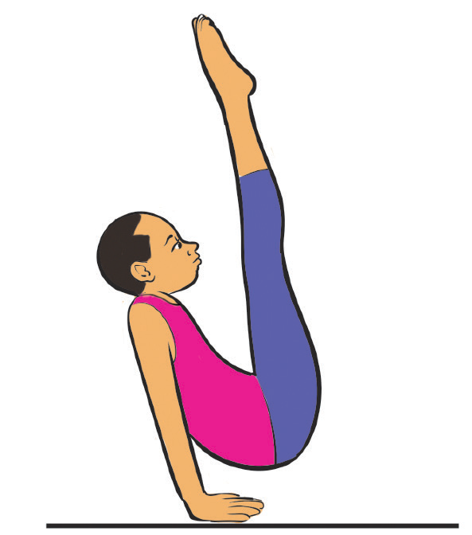

- (v) Hold the V position keeping your back slightly leaned back for balance, Figure 4.12; and
- (vi) Control the lowering slowly and bring your legs back down to finish.

Activity 4.12
Search from internet and other sources on how to execute a V-sit and practice it.
Straddle planche
A straddle planche is an advanced strength and balance skill where a gymnast holds the body parallel to the ground, supported only by the hands, with the legs spread apart in a straddle position. It requires core strength, shoulder stability, and balance and is often seen in men’s gymnastics, calisthenics, and breakdancing. The following steps will help you practice straddle planche:
- (i) Place your hands on the floor, shoulder-width apart;
- (ii) Lean forward shifting weight onto your arms while engaging your core and shoulders;
- (iii) Straighten your arms completely keeping elbows locked to maintain stability;
- (iv) Extend legs into a straddle opening legs wide while keeping them parallel to the floor, Figure 4.13; and
- (v) Hold the position to maintain control, keeping your body straight and strong.
SPORTS STUDIES FORM TWO.indd 119
9/17/25 9:54 AM